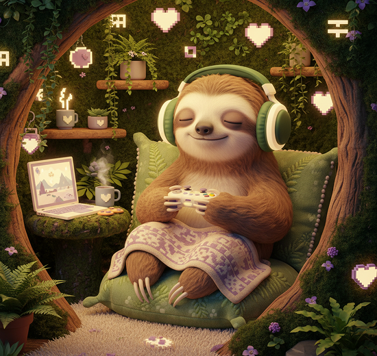

SAVE POINT AVAILABLE
Tiny mindfulness quests for gamers who want steadier focus, softer tilt, and better breaks-- without leaving the party.

No streaks. No guilt. Just a useful pause between rounds.
Clear prompts, visible timers, and zero mystical jargon. Learn one practical skill at a time, then take it straight back into play.
One tiny reset, one player story, no spam.